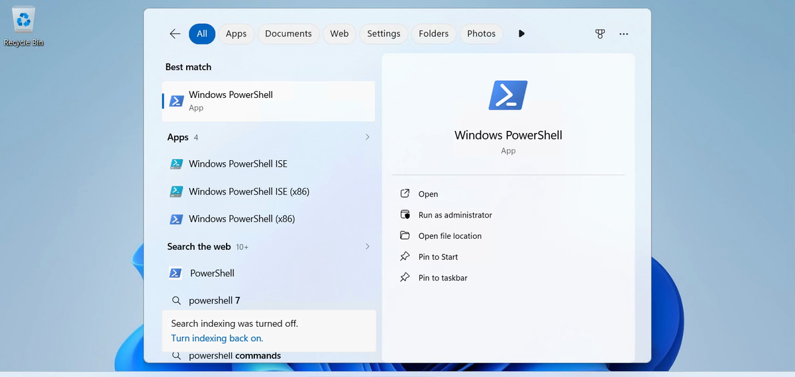
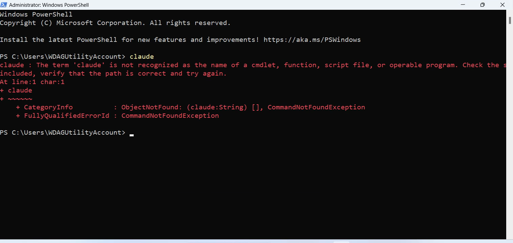
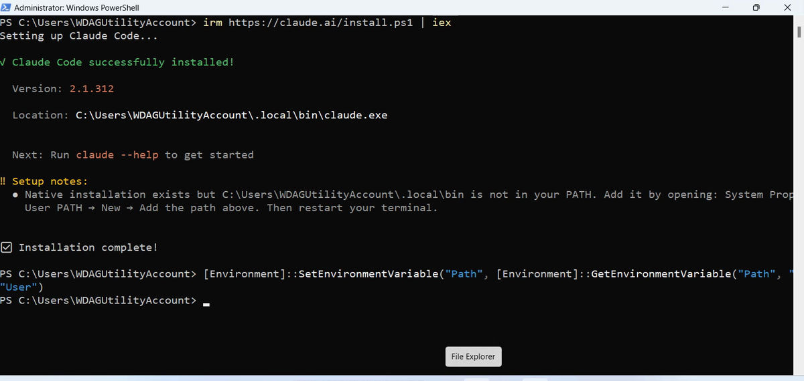
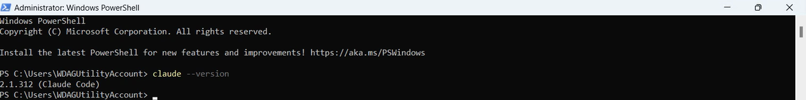
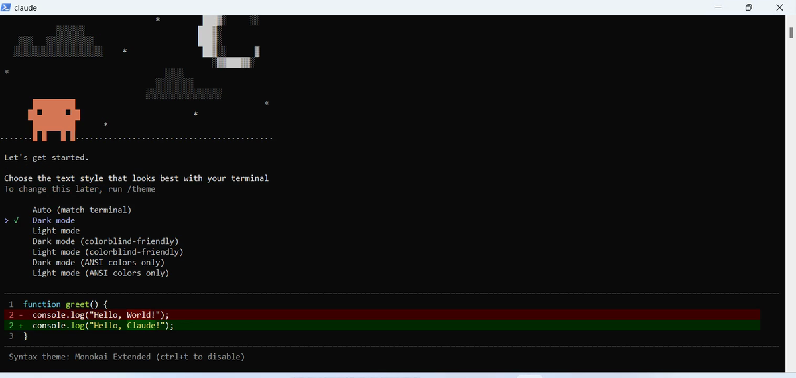
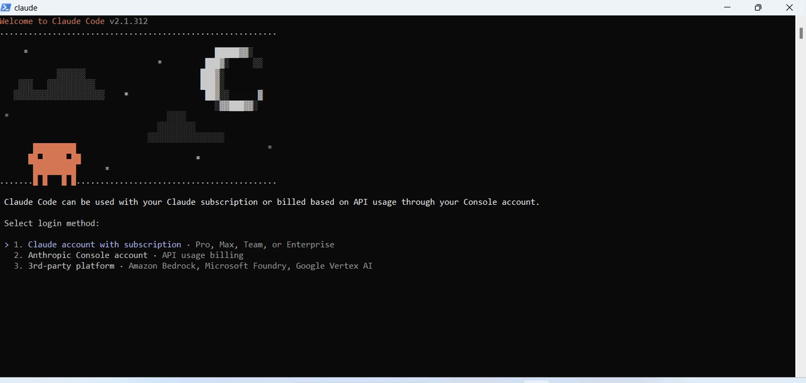
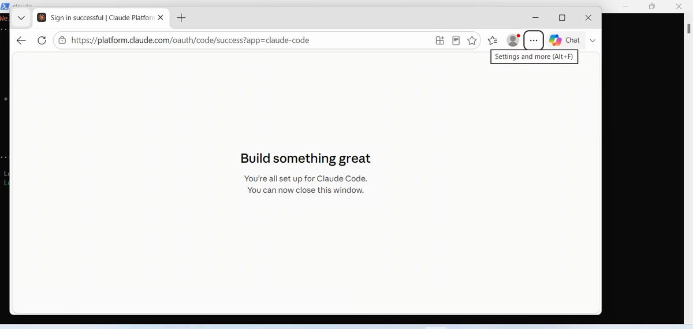
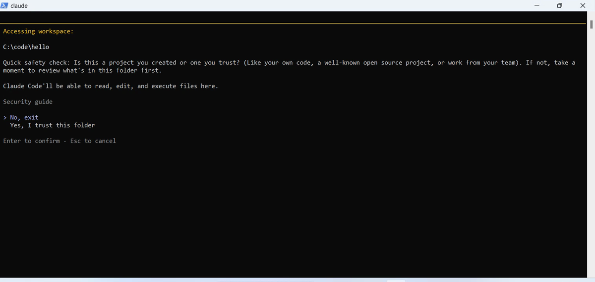
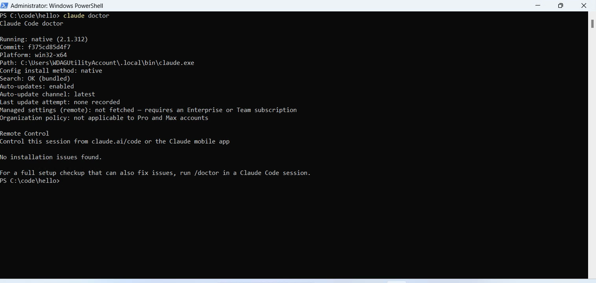

How this series works
We learn Claude Code by building one app, start to finish. Each chapter starts with a problem we hit while building. Then we find the Claude Code feature that solves it, and use it at once.
The app is DevPulse: you type what you worked on and for how long, and it shows your day, your week and your streak. By chapter 14 it has tests, its own tools for Claude, and a public page on the internet.
Each chapter goes with one video, the episode with the same number. The video shows it; the page lets you build along at your own pace. Every chapter ends with a quick reference and homework.
What you need
Everything here is free, except one thing.
- A Claude plan with Claude Code. The Free plan does not include it; Pro is the smallest plan that does. This is the only thing you pay for.
- A 64-bit computer: Windows 10 or 11, or a Mac with macOS 13 or later.
- Free tools: Git, Python 3.12 or later, Node.js 20 or later, and a free GitHub account. The install guide on the blog links each one.
Install Claude Code
I recorded this on a brand-new Windows, so you see exactly what a first install looks like.
Press the Windows key and type powershell.

First, see that Claude Code is not there yet. Type claude and press Enter.

It takes a minute or two. On our clean Windows it finished with a note that matters.

claude. The line under it fixes that.PATH is the list of folders Windows searches when you type a command. If you see that note, paste this line once.
Check it is found
Close PowerShell and open a new one, so it reads the new PATH. Then ask for the version.

Sign in, the first time
Claude Code works inside a folder. Make a small one to try it in, and start Claude Code there.
The first start asks a few things, one screen at a time.
- A colour style for your terminal. Dark mode is fine.
- How you sign in. Choose Claude account with subscription.
- Your browser opens. Sign in with the account that has your plan.
- The trust question for this folder.




You are in. Type /status to see your version, folder, account and model. Then type /exit.
The health check
One last command, outside Claude Code. It checks the whole installation.

If something did go wrong, the install guide on the blog has a table of the usual errors and their fixes.
Before chapter 1
Claude Code is installed, found, signed in and healthy. That is all you need to start.
But a working install is not a working habit. In chapter 1 we ask it to build something, and see how much it decides on its own.
Quick reference
| Command or key | What it does | Use it when |
|---|---|---|
irm https://claude.ai/install.ps1 | iex | Installs Claude Code on Windows (in PowerShell) | Claude Code is not on your computer yet |
curl -fsSL https://claude.ai/install.sh | bash | Installs Claude Code on a Mac or Linux (in Terminal) | The same, on a Mac |
claude --version | Prints the version, ending in (Claude Code) | You want to know it is installed and found |
claude | Starts Claude Code in the folder you are in; the first time, it signs you in | You begin work |
Yes, I trust this folder | Lets Claude read, edit and run files there | It is your own folder |
claude doctor | Checks the installation and names any problem | Something looks wrong |
/exit | Ends the session | You are done |
Ask it one question
The goal: see Claude Code work in a folder before chapter 1.
The steps: in your hello folder, run claude and type: Create a file called hello.txt with one line about what I want to build. Then open the file.
Guess first: will it create the file straight away, or ask you first?
One question for you: what do you want to build with Claude Code? Keep the answer for the end of the series.
References
Where each step on this page comes from. The screenshots are from a clean Windows 11 (Windows Sandbox) on 29 Oct 2026, Claude Code 2.1.312.
- Anthropic · Claude Code quickstart The native installer for Windows and Mac, and signing in on first start. https://code.claude.com/docs/en/quickstart
- Anthropic · Troubleshoot installation claude --version, claude doctor, and the install folder that must be on your PATH. https://code.claude.com/docs/en/troubleshoot-install
- Anthropic · Claude pricing Claude Code is not in the Free plan; Pro is the smallest plan that includes it (checked 28 Oct 2026). https://claude.com/pricing
- Microsoft · Windows Sandbox A clean, throwaway Windows inside Windows 11 Pro, used here to record a real first install. https://learn.microsoft.com/en-us/windows/security/application-security/application-isolation/windows-sandbox/